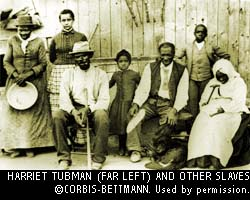
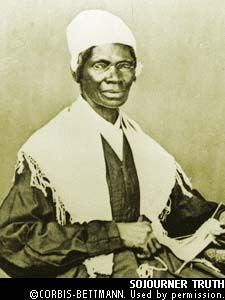

A Safe Place to Explore Questions About Life and God
A Safe Place to Explore Questions About Life and God
By Charles Gilmer
When you hear the name "Jesus" what images and thoughts come to mind?
Devotion to Jesus has been a large part of the African-American experience. The black church has been and continues to be a powerful force in the African-American community. But many are questioning the propriety of African Americans following Jesus. Should we, as black people, follow this Jesus?
Some suggest that Jesus was a foreign deity forced upon our forefathers and mothers. Others suggest that worshiping Jesus has been nothing more than a psychological narcotic to deaden the pain of our oppressed existence. Still others contend that our forefathers' worship of Jesus was merely a mask for the expression of more ancient religious practices, a cover for the practice of "traditional" African religions.
How should we view that influence as we approach a new chapter of our history? Much is being said, yet is what you've heard the truth? Let's, you and I, examine some of these perspectives about African Americans and Christianity.
The best historical record of Jesus' life is found in the Bible. One of the most frequently posed challenges is directed at this book. Is the Bible credible? Isn't it just a European book that has little to do with our people? The answer to the questions are, "Yes, the Bible is credible," and "No, it isn't a European book that has nothing to do with our people." Black people are referred to and appear on the stage of biblical history many times.
Several works have been done to chronicle these instances.1 One notable biblical character was Zipporah, Moses' Midianite wife. This means that Zipporah's father, Jethro, was also black.2 In the New Testament, there are several characters whom scholars believe were likely black due to the location of their home cities. The most undeniable instance was Lucius' comrade in Antioch, Simeon, who was called Niger. Niger simply means "black." African nations and African people are quite prominent in biblical times. To say that the Bible is the white man's holy book or to suggest that it is European in origin or nature, is simply not taking into account the facts.
Some ask, "Isn't Christianity a late arrival in Africa? Isn't it a foreign religion to Africa and Africans?"
In his book, The Early Church in Africa, Dr. John Mbiti outlines the fact that the message of Jesus penetrated Africa before it ever reached Europe. "Christianity in Africa is so old that it can be rightly described as an indigenous, traditional and African religion," says Dr. Mbiti.3
The conversion of the Ethiopian eunuch described in the Book of Acts predates the apostle Paul's first missionary journey into Europe by a number of years. There is clear, historical documentation of the church in Africa by the third century. Christianity was the dominant religion in North Africa and most notably Egypt.
Egyptian and North African scholars such as Clement, Origen, Tertullian, and Athanasius are widely recognized as fathers of the church. By the year 300, Egypt had more than a million Christians. In the sixth century, Christianity spread to the Nubian Kingdoms, soon becoming the dominant religion. The Christian Nubian Kingdoms survived for 700 years, resisting attempted domination by Muslim conquerors for 600 of those years.
The Egyptian Coptic Church in the Sudan and the Ethiopian Orthodox Church still exist today. Though persecuted, their presence is testimony to the historicity of Christianity in Africa.4 There is growing evidence that the long-standing presence of Christianity in the Nile Valley and in present-day Ethiopia provided a base for the introduction of Christianity in Southern and Western Africa.
In summary, the assertion that Christianity is the "white man's religion" is neither historically accurate nor currently true. The first African Christians were not American slaves. The Christian heritage in Africa goes all the way back to the days of the Bible itself.
Some ask, "Well, didn't Christians start, perpetuate and defend American slavery?"
First of all, slave trading was not introduced to Sub-Saharan Africa from Europe. Arab Muslims had been conducting a slave trade for hundreds of years before Europeans arrived on the west coast of Africa. Second, the slave traders themselves seldom claimed to be devout men, even though they came from "Christian nations."
In contradiction to this perception stands the life of a white Englishman named William Wilberforce. He led the fight against the slave trade in Parliament because of his commitment to Jesus Christ. His is an incredible story of sacrifice and dedication to truth and justice for African people. While it took his entire life to win this victory, win he did.
In the United States, Christians reacted to slavery in a substantially different way. While there was vocal Christian protest against the slave trade and much of the abolitionist movement was spear-headed by Christian people, there were also many Christians who defended slavery. The issue of slavery grew more divisive, and eventually most of the major Protestant denominations divided over the issue. This actually set the stage for the Civil War.
While many factors contributed to the onset of the Civil War, no one can argue that slavery was not a principle cause for the split of the nation, South from North. Many rightly contend that Abraham Lincoln's original objective in the war was not the removal of slavery from the South. Yet it is clear that as the war dragged on, he began to sense the larger drama that was being played out via the conflict. In his Second Inaugural Address, Lincoln spoke eloquently of his growing belief that God was judging the United States for indulging the wicked institution of slavery.
It is intriguing to note that our nation lost more lives in that one conflict than in all its other wars combined. Perhaps we can conclude that God did not turn a blind eye to the sufferings of the slaves, nor did He wink at the conduct of those who oppressed African people in America.
What was the attitude of the slaves through all of this? How could our forefathers embrace the religion of their oppressors?
Part of the rationalization of the slave trade was to "civilize" and "Christianize" the Africans. Missionary efforts among the slaves were allowed because owners assumed that Christianity would make slaves better workers.
In the course of this instruction, the slaves discovered something. While the Bible did teach, "Slaves, obey your earthly masters with respect and fear," it also said, "And masters, treat your slaves in the same way. Do not threaten them, since you know that he who is both your Master and theirs is in heaven and there is no favoritism with him."5
They discovered that the slavery alluded to in the Bible was substantially different from what they were experiencing. Too many masters wanted their slaves to submit to the commands of Scripture but were unwilling to live by those commands themselves.
The slaves discovered this contradiction but did not allow that to interfere with receiving the transcendent truth of the Bible. In its pages they found hope, courage, strength and comfort. The Negro spirituals are the legacy of the faith of those who, from an earthly standpoint, had cause for despair.
The slaves who turned to Jesus knew the difference between some of the versions of Christianity they were seeing practiced and the Christianity they were hearing described in the Bible. Hence the line in the spiritual, "Everybody talkin' 'bout heaven ain't goin' there." They chose to follow the Jesus they saw in the Bible. Jesus provided the hope and power they needed to survive slavery.
This faith enabled our forefathers to endure trials and hardships that we can only imagine. This faith inspired leaders to respond courageously to the problems of our people. These leaders were the likes of Harriet Tubman, Frederick Douglass, Sojourner Truth, and the thousands of former slaves who enlisted in the Union Army to fight for their freedom.
The liberating dynamic of the Bible caused the Southern states to place restrictions on missionary activities among the slaves, forbidding reading instruction and limiting preaching by slave preachers. They also began to put restrictions on slave worship services.
The spiritual "Steal Away" signaled the calling of a worship service to be held in the "hush arbors" outside of the scrutiny of the master or his overseers. In these hush arbors (gathering places in the seclusion of the woods) our forefathers and mothers could revel in the truth that they were not brute beasts with no more value than an ox or an ass. No, the Bible taught them that they were children of the Most High God, citizens of His heavenly kingdom, and that they had inherent value as humans. When they entered into prayer and worship, they experienced a fleeting but galvanizing foretaste of an eventual eternal reward.
Yet, some ask, "Wasn't the white church an accomplice to our ongoing oppression and isn't the black church a pacifying agent in our struggle for freedom?" Of course, neither the Emancipation Proclamation nor the North's victory in the Civil War ended our problems. After the hope and turmoil of the Reconstruction period, black Americans again found themselves being systematically and legally oppressed. Unfortunately, once again, many who claimed to be Christians were involved in the reign of terror, which sought to keep African Americans in their place.
The Southern white church was at best silent, and at worse, actively defending the conduct of those who were marauding among, intimidating, and lynching our people. Very few black families today are devoid of horror stories of relatives and friends who were abused and/or murdered. Black societies and businesses were seldom allowed to survive.
The black community found refuge in the church. Although there were exceptions, like the 16th Street Baptist Church bombing in Birmingham, the church provided some protection from those who would harm black people. And in the church our people found the peace, comfort and strength previously cultivated in the hush arbors.
The vibrancy and progressive power of the black church is well documented. It was in the churches that the black colleges were conceived, given birth and prayed for. It was in the churches that a young and vibrant NAACP carried on its membership drives. It was the clergy who often provided the leadership for the black community at large. The powerful building effect of the African-American church cannot be disputed. And it was the church that gave us our drum major for justice, the Rev. Dr. Martin Luther King, Jr.
Those who suggest that Christianity has been a debilitating and pacifying force in the African-American community are ignoring the evidence. The God of the Bible has always been a source of comfort, strength and hope for our people. Faith in Jesus Christ has not created passivity but rather activism in thousands of African Americans.
It is true that there have been those who have attempted to justify their mistreatment of us on the basis of the Bible. But this view has never held up to honest scrutiny. It is true that some of our people have listened to lies that have been told us, and to misinterpretations of biblical passages, thereby developing twisted and unhealthy views of themselves and of our people. But those who have followed Jesus Christ have been some of our most effective leaders, our most impressive achievers, and our most eloquent spokespeople. By their own testimony, these African-American Christians declare that it was their relationship with Jesus that fueled their struggle, energized their activism, and gave them hope for a better future for our people.
What happened to our "Old Time Religion"? Why does the African-American church struggle to gain the allegiance of the emerging generation?
The evolution of the Civil Rights Movement set up young African Americans for a collective crisis of faith. The post-World War II thrust for civil rights found no better incubator than the black churches of the South. Martin Luther King's Southern Christian Leadership Conference was the most visible manifestation of the Christian presence in the Civil Rights Movement. Those early mass meetings were characterized by prayer, the singing of hymns and spirituals, and an orderliness of conduct that revealed the Christian influence of the attendees.
Dr. King's appeal was to the moral conscience of the nation, based on its Judeo-Christian values. Yet, the white church failed to support his pleas for justice, freedom and equal treatment. It took the emerging electronic media's coverage of atrocities in the South to finally shame a reluctant federal government to get involved. It was the government, not the white church, that secured the rights for which so many had prayed, marched and shed blood.
This opened the door for those who wanted to disparage the Christian message. Many progressive whites befriended the Civil Rights leadership, becoming our allies in the struggle. Youthful leadership emerged, enraged by the cowardice and hypocrisy of the white church, to declare the need for new thinking. The new allies were quick to provide alternative ideologies, like dialectical Marxism, radical feminism and political liberalism. The patience of the previous generations began to be interpreted as weakness -- a weakness often attributed to the gentle nature of Christianity.
A generation of African Americans began to drift away from the church. These first recipients of the benefits of desegregation were facing new challenges, choosing from previously unheard of opportunities and experiencing unprecedented freedom. The nation had grudgingly removed the obstacles to broader exploration and the younger crowd was ready to wander. The black church struggled to effectively speak to those who had left its confines.
What has been the outcome? Those who have not had access or failed to capitalize on the new opportunities are left without hope for a better future. And the popular notion that Jesus has nothing to offer created a vacuum of moral authority. No longer do we look to God as the one to whom we are accountable. We are our own authority. Some even teach that "The black man is God."
If this is so, then we can define our own morality, establish our own standards of behavior, and sit in judgment of everyone else. But we have failed because we are not God. No wonder drug trade is seen as an understandable and too often an acceptable career choice. No wonder teenage pregnancy continues to rise and sexually transmitted diseases are approaching epidemic proportions.
And those who do get an education or establish themselves in legally acceptable jobs are not free from concern. There are still obstacles to acceptance by the mainstream society, and the children of the middle class often get caught in the undertow of sexual and chemical enticements. It almost seems that African-American culture is being overrun by a pathological pursuit of self-aggrandizement, sensuality and prosperity at any cost.
The poet and educator James Weldon Johnson proved to be prophetic when he wrote the last stanza of "Lift Every Voice and Sing" in 1921. This work came to be known as the Negro National Anthem and was sung daily after the Pledge of Allegiance in many black schools up until the time of desegregation. His lyrics warned us of the potential for our current predicament:
God of our weary years, God of our silent tears,
Thou who hast led us thus far on our way,
Thou who hast by thy might led us into the light
keep us forever in the path we pray.
Lest our feet stray from the places, our God, where we met Thee.
Lest our hearts, drunk with the wine of the world, we forget Thee.
Sadly, too many of our feet have strayed. Too many of our hearts are drunk.
What should we do now? How can we honor our history, respond to the present, and build a viable, vibrant future for our people?
It is not too late. We can still return to the God of our fathers. You can select from a number of eras to find African people to consider your "fathers." You could choose the ancient African Christians, who laid the foundations for much of modern Africa. You could identify with those slaves who prayed in the hush arbors. Or you can honor the perseverance of those Negro Christians who washed floors and swept streets to feed and clothe your grandparents. In any case, it starts with an individual choice. You must choose Jesus for yourself.
Choosing Jesus prepares you to be a real agent of change in our community. We have had enough leaders who have experienced some success, but who got off track somehow. These sidetracks have taken many different forms, from sexual and financial scandals to a constant pursuit of acknowledgment from the white community. Too many of our leaders have compromised our spiritual heritage in order to gain political or economic allies. A vibrant relationship with Christ will give you the power to govern yourself and live according to what is right, not according to what is expedient.
Those of us who discover the power of a relationship with Christ and who see the need for spiritual transformation in our community must band together to build a new future. We must give our brothers and sisters a reason to turn away from the traps that surround them. Jesus is that reason.
We must tell the truth about the challenges we face and develop an agenda for overcoming those challenges. That agenda emanates from Jesus. Then we must forge the strategies that will allow our people to make the kind of broad-based progress we all long for. Those strategies will come from people who have the mind of Christ. In the Book of Proverbs in the Bible it says, "Righteousness exalts a nation..."6 If we allow the righteousness of Christ to flow through us, and thereby through our community, we can turn the tide.
We have been looked down on so long and so pervasively, and our people disappoint us so often, we can begin to wonder if the negative stereotypes are really true. In this vulnerable state we are susceptible to the persuasiveness of eloquent orators like Louis Farrakhan or anyone else who will tell us that we are the best, brightest, most noble people on the earth. It is easy to buy into ideas that lift black people above all others. Our righteous anger is easily manipulated to get us to buy into theories of a white conspiracy to hold us back. It feels good to hold someone else responsible for our struggles. Of course, there is plenty of racism remaining in this society, supplying fuel for those who would stoke the fires of rage and resentment.
Jesus, in what he taught and what he modeled, provides a different perspective. He teaches us that those who have oppressed us will be called to account for their actions. He also directs our attention back to our own responsibility. We will be called to reckon with our own choices.
Jesus spoke a message that echoes across the landscape of time and penetrates to the heart of our predicament.
"I tell you the truth, everyone who sins is a slave to sin.. So, if the Son sets you free, you will be free indeed." John 8:34,36
All the problems we face as individuals and as a people can be summarized in one word -- sin.
Sin is the biblical word for those actions and our general state of non-conformity to the will and design of God. God made the universe to run on certain principles. When we step outside the bounds of these principles, we enter into sin. This definition helps us understand Jesus' teaching that all sin is harmful. If God designed things to run and function a certain way, whenever we step outside of those design boundaries, we are likely to experience negative consequences.
Black people's suffering is either because of someone else's sin or due to our own. Yet, Jesus promises to free us from sin.
You see, God is holy. As such, He cannot tolerate the presence of sin. It is contrary to His nature. So, sin must be dealt with, or judged, and punished. Yet, God is loving. How could He be both just and loving toward us rebellious, sinful human beings? He resolved this dilemma by taking on human flesh Himself, walking this earth, and dying a painful, humiliating death to pay for the punishment of our sin. How could one man's death pay the penalty for the sin of billions of humans? Because He is God, both infinite and eternal. He created an infinite and eternal payment for sin by submitting Himself to death. How do we access this freedom that Jesus purchased for us? By personally accepting him as Savior and Lord.
This is the freedom our forefathers found in the midst of slavery. The freedom to transcend their circumstances. The freedom that comes from living on the basis of a higher reality. This is the freedom that ignited the activity of so many who have fought for the freedom and dignity of our people. This is the freedom that you can experience if you will place your trust in Him.
We have an extraordinarily rich spiritual heritage. And Jesus is central to that heritage. We can honor their memory by rediscovering the faith that allowed our forbearers to survive. We can build on the legacy they have left us by carefully following the one they followed -- Jesus.
You have the opportunity to live out an incredible, eternal transcendent purpose -- a purpose rooted in an eternal hope. Many are involved in seeking to bring about change in the black community. Yet, without an eternal perspective, without a hope fixed on a God who is just, loving, and who offers eternal life, all our striving has to be measured by its effect here and now, in our immediate experience. There is a lot of noble talk about needing to bring about change for the sake of the next generation. But without an eternal perspective those who live on the margins of society have little reason to hope. They have little power. They have limited opportunities. Why should they turn away from the temptations and enticements that offer them quick rewards and a short-term escape?
A relationship with Christ offers not only hope, but the power to do what is right. This is another implication of Jesus' statement, "the truth will set you free." Jesus, in all His power, promises to take up residence in the life of those who place their trust in Him. He gives us the power to resist temptation and to live a godly life. In other words, He gives us the freedom to do what is right instead of being enslaved by our own desires and passions.
Don't let the lies being told about Jesus keep you from knowing the truth. Watch out for those who will play to your emotions, provide pseudo-intellectual arguments, but have bizarre notions built into their beliefs. Like so many of our forefathers, you will find in Jesus a kind, compassionate, powerful friend. One who can give you a new life and set you free from the penalty and power of sin. Then and only then will you be able to see the world clearly, according to truth, and find the purpose for which God created you.
The truth about Jesus is that He is our only sure and lasting hope. Black people were not an afterthought, nor has He relegated us to some secondary position in His kingdom. African people have been a part of His working from the beginning. He is the Savior of all mankind and He will work in the midst of any people who place their trust in Him. The history of African Americans is an illustration of this fact. And He awaits our response to manifest His love and power to us once again.
God has a purpose for African Americans. We were created for a noble, yes, even a divine destiny. As we follow Him, we will fulfill that destiny. A destiny of eternal significance. A destiny of present impact on our community. A destiny that maximizes the potential God built into you when He created you. There is no higher calling, and no better life.
"At times we may feel that we do not need God ... There is so much frustration in the world because we have relied on gods rather than God..These transitory gods are not able to save us or bring happiness to the human heart.
"Only God is able. It is faith in Him that we must rediscover. With this faith we can transform bleak and desolate valleys into sunlit paths of joy and bring new light into the dark caverns of pessimism."
--Dr. Martin Luther King, Jr.
Are you ready to respond to the Jesus who is the real truth? Or do you need to recommit your life to Him? If you realize you need to place your faith in Jesus, simply talk to Him. Say something like, "Lord Jesus, I know I have strayed from You. Thank You for paying the price for my freedom. Forgive my pride and my sin. Help me to be true to You. Amen."
| ► | I just asked Jesus into my life (some helpful information follows)... |
| ► | I may want to ask Jesus into my life, please explain this more fully... |
| ► | I have a question or comment... |
 Charles Gilmer is the Founding and Past President of The Impact Movement, Inc., a partner ministry with Cru, which takes the truth of Jesus Christ to the campus, the community and the world by producing leaders of African descent who are spiritually focused, financially responsible and morally fit. He has spoken on campuses across the US and in Africa on race relations, missions and the Christian faith. He is a graduate of the University of Pennsylvania, and has been honored with a Doctor of Divinity degree by Carver Bible College. Charles and his wife, Rebecca, are currently studying at Princeton Theological Seminary. They have six children and seven grandchildren.
Charles Gilmer is the Founding and Past President of The Impact Movement, Inc., a partner ministry with Cru, which takes the truth of Jesus Christ to the campus, the community and the world by producing leaders of African descent who are spiritually focused, financially responsible and morally fit. He has spoken on campuses across the US and in Africa on race relations, missions and the Christian faith. He is a graduate of the University of Pennsylvania, and has been honored with a Doctor of Divinity degree by Carver Bible College. Charles and his wife, Rebecca, are currently studying at Princeton Theological Seminary. They have six children and seven grandchildren.
(1) Several good works have been done on the presence of black or African peoples in the Bible. Beyond Roots by Rev. Dwight McKissic is a simple biblical survey of the subject for popular audiences. Troubling Biblical Waters by Dr. Cain Hope Felder is a more scholarly work, sifting the subject through the filters of the more skeptical schools of textual criticism. (2) Exodus 2:15ff; Numbers 12:1. (3) John S. Mbiti, African Religions and Philosophy (London: Heinemann, 1969), p.229, as cited in The Early Church and Africa, John P. Kealy and David W. Shenk, Nairobi Oxford University Press, 1975, p.1. (4) Ibid., pp.290-295. (5) Ephesians 6:5,9. (6) Proverbs 14:34.
Images provided by Corbis-Bettman Archive are prohibited from being copied for commercial purposes.